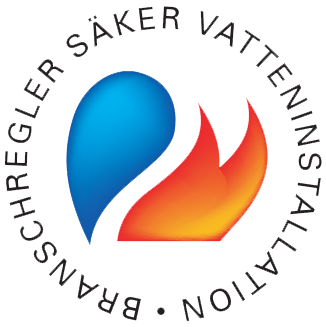

Behöver du hjälp av en rörmokare i Gislöv? Grännsjö VVS AB hjälper privatpersoner och företag med service, installation, badrumsrenovering och reparation inom VVS.
Vi utför allt från mindre servicejobb till större installationer och renoveringar. Vi arbetar alltid enligt branschreglerna och lägger stor vikt vid tydlig kommunikation, snygga installationer och ett tryggt, fackmannamässigt utfört arbete.

Vi hjälper till med både mindre servicejobb och större installationer.
Telefon: 076-794 53 81
E-post: andersgrannsjo@hotmail.com
Område: Gislöv med omnejd
Vi hjälper dig med både små och stora jobb i Gislöv.
Letar du efter en rörmokare i Gislöv som är enkel att få tag på och som utför jobbet ordentligt? Grännsjö VVS hjälper till med allt från läckage och felsökning till installation av blandare, WC, varmvattenberedare och badrumsrenovering.
Vi hjälper både privatpersoner och företag och anpassar lösningen efter behov, oavsett om det gäller ett mindre servicejobb eller ett större projekt.
Som Säker Vatten-auktoriserat företag arbetar vi enligt gällande branschregler och med fokus på hållbara installationer.
Vi hjälper kunder i Gislöv och runt omkring i södra Skåne.
Vi utför trygga och noggrant utförda VVS-arbeten för hem, fastigheter och företag.
Felsökning, läckage, byte av delar och allmän VVS-service.
Installation och byte av blandare, toaletter och annan sanitet.
Byte och installation av varmvattenberedare samt tillhörande rördragning.
Montering, byte och anpassning av radiatorer och värmesystem.
Montering och byte av vattenutkastare för säkra och hållbara lösningar.
Installation och anpassning enligt gällande krav och branschregler.
Helhetslösningar eller delmoment vid renovering av badrum, utfört enligt branschregler.
Beskriv jobbet så återkommer vi så snart vi kan.
Behöver du hjälp med ett jobb, vill boka service eller be om offert?
Ring eller mejla så återkommer vi så snart vi kan.
Telefon: 076-794 53 81
E-post: andersgrannsjo@hotmail.com
Verksamhetsområde: Anderslöv, Trelleborg och södra Skåne